| Country | Capital | Flag |
|---|---|---|
| Afghanistan | Kabul | |
| Albania | Tirana | 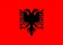 |
| Algeria | Algiers | 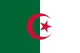 |
| Andorra | Andorra la Vella | 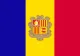 |
| Angola | Luanda | 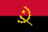 |
| Antigua and Barbuda | St. John's | 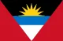 |
| Argentina | Buenos Aires | |
| Armenia | Yerevan | 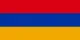 |
| Australia | Canberra | |
| Austria | Vienna | |
| Azerbaijan | Baku | |
| Bahamas | Nassau | |
| Bahrain | Manama | |
| Bangladesh | Dhaka | 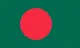 |
| Barbados | Bridgetown | |
| Belarus | Minsk | 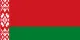 |
| Belgium | Brussels | |
| Belize | Belmopan | |
| Benin | Porto-Novo | 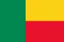 |
| Bhutan | Thimphu | |
| Bolivia | Sucre | 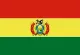 |
| Bosnia and Herzegovina | Sarajevo | |
| Botswana | Gaborone | |
| Brazil | Brasília | |
| Brunei | Bandar Seri Begawan | |
| Bulgaria | Sofia | |
| Burkina Faso | Ouagadougou | |
| Burundi | Gitega | 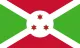 |
| Cabo Verde | Praia | |
| Cambodia | Phnom Penh | |
| Cameroon | Yaoundé | |
| Canada | Ottawa | |
| Central African Republic | Bangui | 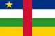 |
| Chad | N'Djamena | |
| Chile | Santiago | |
| China | Beijing | |
| Colombia | Bogotá | |
| Comoros | Moroni | 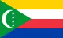 |
| Congo (Republic of the) | Brazzaville | |
| Congo (Democratic Republic of the) | Kinshasa | |
| Costa Rica | San José | 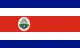 |
| Côte d'Ivoire | Yamoussoukro | |
| Croatia | Zagreb | |
| Cuba | Havana | |
| Cyprus | Nicosia | |
| Czech Republic | Prague | |
| Denmark | Copenhagen | |
| Djibouti | Djibouti (city) | 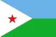 |
| Dominica | Roseau | 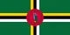 |
| Dominican Republic | Santo Domingo | 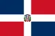 |
| Ecuador | Quito | 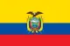 |
| Egypt | Cairo | 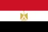 |
| El Salvador | San Salvador | |
| Equatorial Guinea | Malabo | |
| Eritrea | Asmara | 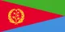 |
| Estonia | Tallinn | |
| Eswatini | Mbabane | |
| Ethiopia | Addis Ababa | |
| Fiji | Suva | |
| Finland | Helsinki | |
| France | Paris | |
| Gabon | Libreville | |
| Gambia | Banjul | 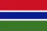 |
| Georgia | Tbilisi | 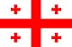 |
| Germany | Berlin | |
| Ghana | Accra | |
| Greece | Athens | |
| Grenada | St. George's | 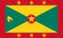 |
| Guatemala | Guatemala City | 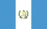 |
| Guinea | Conakry | |
| Guinea-Bissau | Bissau | 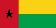 |
| Guyana | Georgetown | 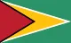 |
| Haiti | Port-au-Prince | |
| Honduras | Tegucigalpa | |
| Hungary | Budapest | |
| Iceland | Reykjavík | |
| India | New Delhi | |
| Indonesia | Jakarta | |
| Iran | Tehran | 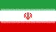 |
| Iraq | Baghdad | |
| Ireland | Dublin | |
| Israel | Jerusalem | |
| Italy | Rome | |
| Jamaica | Kingston | 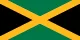 |
| Japan | Tokyo | |
| Jordan | Amman | |
| Kazakhstan | Nur-Sultan | |
| Kenya | Nairobi | |
| Kiribati | South Tarawa | 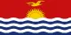 |
| Kosovo | Pristina | 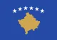 |
| Kuwait | Kuwait City | |
| Kyrgyzstan | Bishkek | |
| Laos | Vientiane | |
| Latvia | Riga | |
| Lebanon | Beirut | 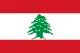 |
| Lesotho | Maseru | 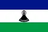 |
| Liberia | Monrovia | |
| Libya | Tripoli | |
| Liechtenstein | Vaduz | |
| Lithuania | Vilnius | |
| Luxembourg | Luxembourg | |
| Madagascar | Antananarivo | 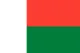 |
| Malawi | Lilongwe | |
| Malaysia | Kuala Lumpur | 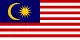 |
| Maldives | Malé | |
| Mali | Bamako | |
| Malta | Valletta | |
| Marshall Islands | Majuro | |
| Mauritania | Nouakchott | 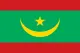 |
| Mauritius | Port Louis | 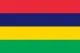 |
| Mexico | Mexico City | 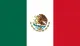 |
| Micronesia | Palikir | |
| Moldova | Chișinău | |
| Monaco | Monaco | |
| Mongolia | Ulaanbaatar | |
| Montenegro | Podgorica | 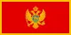 |
| Morocco | Rabat | 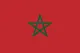 |
| Mozambique | Maputo | 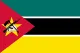 |
| Myanmar | Naypyidaw | |
| Namibia | Windhoek | |
| Nauru | Yaren (de facto) | |
| Nepal | Kathmandu | |
| Netherlands | Amsterdam | |
| New Zealand | Wellington | |
| Nicaragua | Managua | |
| Niger | Niamey | |
| Nigeria | Abuja | |
| North Korea | Pyongyang | |
| North Macedonia | Skopje | |
| Norway | Oslo | |
| Oman | Muscat | 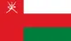 |
| Pakistan | Islamabad | |
| Palau | Ngerulmud | |
| Palestine | Ramallah | |
| Panama | Panama City | |
| Papua New Guinea | Port Moresby | 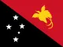 |
| Paraguay | Asunción | |
| Peru | Lima | |
| Philippines | Manila | |
| Poland | Warsaw | |
| Portugal | Lisbon | |
| Qatar | Doha | |
| Romania | Bucharest | |
| Russia | Moscow | |
| Rwanda | Kigali | 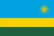 |
| Saint Kitts and Nevis | Basseterre | 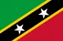 |
| Saint Lucia | Castries | |
| Saint Vincent and the Grenadines | Kingstown | |
| Samoa | Apia | |
| San Marino | San Marino | 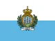 |
| Sao Tome and Principe | São Tomé | |
| Saudi Arabia | Riyadh | |
| Senegal | Dakar | 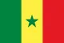 |
| Serbia | Belgrade | |
| Seychelles | Victoria | |
| Sierra Leone | Freetown | |
| Singapore | Singapore | |
| Slovakia | Bratislava | |
| Slovenia | Ljubljana | |
| Solomon Islands | Honiara | 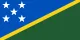 |
| Somalia | Mogadishu | |
| South Africa | Pretoria | |
| South Korea | Seoul | |
| South Sudan | Juba | |
| Spain | Madrid | 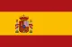 |
| Sri Lanka | Sri Jayawardenepura Kotte | |
| Sudan | Khartoum | |
| Suriname | Paramaribo | 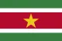 |
| Sweden | Stockholm | 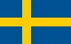 |
| Switzerland | Bern | |
| Syria | Damascus | |
| Taiwan | Taipei | |
| Tajikistan | Dushanbe | |
| Tanzania | Dodoma | |
| Thailand | Bangkok | |
| Timor-Leste | Dili | |
| Togo | Lomé | |
| Tonga | Nuku'alofa | |
| Trinidad and Tobago | Port of Spain | |
| Tunisia | Tunis | |
| Turkey | Ankara | |
| Turkmenistan | Ashgabat | |
| Tuvalu | Funafuti | |
| Uganda | Kampala | |
| Ukraine | Kyiv | |
| United Arab Emirates | Abu Dhabi | |
| United Kingdom | London | |
| United States of America | Washington, D.C. | |
| Uruguay | Montevideo | |
| Uzbekistan | Tashkent | |
| Vanuatu | Port Vila | |
| Vatican City | Vatican City | |
| Venezuela | Caracas | |
| Vietnam | Hanoi | |
| Yemen | Sana'a | |
| Zambia | Lusaka | |
| Zimbabwe | Harare | all country name |